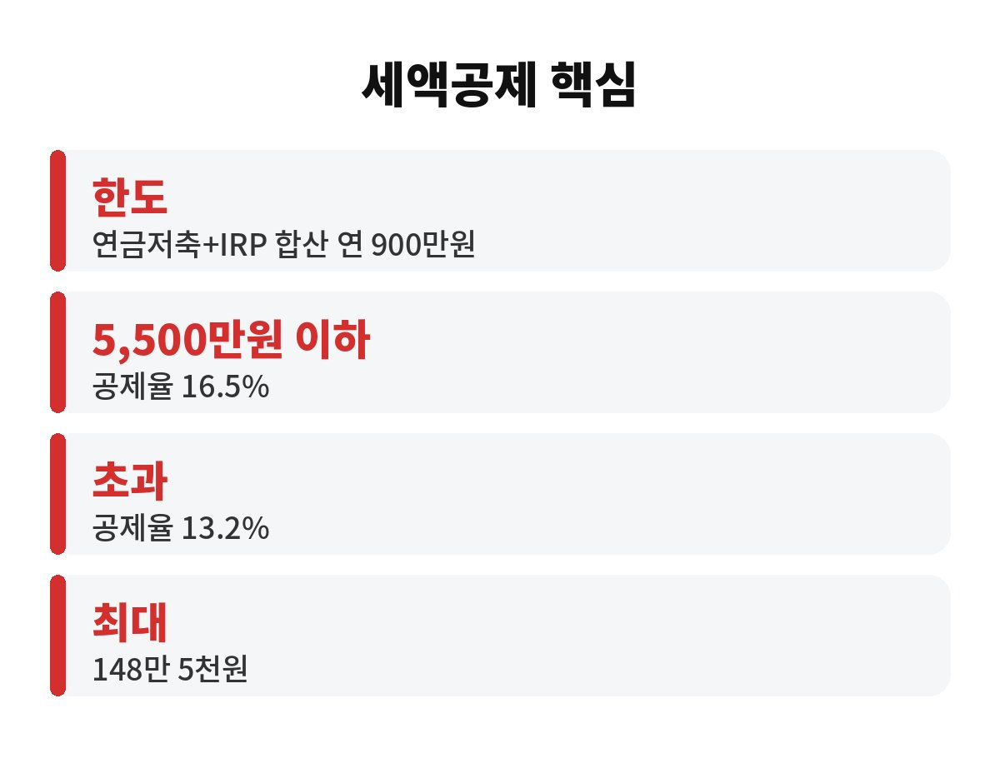

IRP 세액공제는 연금저축과 합쳐 연 900만원까지 납입하면 최대 148만 5천원을 돌려받는 제도입니다. 월급쟁이라면 12월 31일이 지나기 전에 내 한도가 얼마나 남았는지 꼭 봐야 하는데, 어떻게 계산할까요?
연말정산은 해가 바뀌면 이미 늦습니다. 내년 2월에 "아, 그때 넣을걸" 하고 후회하는 분이 정말 많거든요. 오늘은 숫자 위주로 짧게 짚어볼게요.
세액공제 대상 납입 한도는 연금저축과 IRP를 합쳐 연 900만원입니다. 여기에 공제율을 곱한 금액이 내가 낸 세금에서 그대로 빠져요. 공제율은 총급여에 따라 달라집니다.
| 총급여 | 공제율 | 900만원 납입 시 환급 |
| 5,500만원 이하 | 16.5% | 148만 5천원 |
| 5,500만원 초과 | 13.2% | 118만 8천원 |
한 달에 75만원씩 넣으면 1년에 딱 900만원이 됩니다. 하지만 지금이 10월 말이니, 아직 한 푼도 안 넣었다면 남은 두 달 안에 몰아서 넣는 방법도 있어요.
연금저축만으로 900만원을 이미 채웠다면 IRP는 굳이 필요 없습니다. 반대로 연금저축으로 300만원만 넣었다면 IRP에 600만원을 더 넣어 한도를 채울 수 있어요. 둘은 한도를 같이 쓰는 구조라서, 따로 900만원씩 되는 게 아니라는 점이 함정입니다.
그래서 먼저 올해 연금저축 납입액부터 확인하세요. 금융사 앱에서 납입 내역을 보면 1분이면 끝납니다.
기본적으로 해당 연도 안에 납입한 금액이 그 해 공제 대상입니다. 다만 12월 마지막 날은 이체 마감이나 영업일 문제로 반영이 늦어질 수 있어요. 안전하게 하려면 12월 중순 전에 넣어두는 걸 권합니다. 정확한 마감 시간은 이용 중인 금융사에 꼭 확인하세요.
IRP는 원칙적으로 55세 이후 연금으로 받는 계좌입니다. 중간에 급하게 꺼내면 받았던 세액공제를 도로 토해내고 기타소득세까지 물 수 있어요. 148만원 환급이 달콤해 보여도, 당장 필요한 생활비나 비상금까지 털어 넣으면 안 됩니다.
또 세금을 아예 안 내는 사람은 공제받을 세금이 없어서 혜택이 거의 없습니다. 내가 올해 낸 결정세액이 얼마인지 먼저 보셔야 해요.
정리하면 한도는 합산 900만원, 공제율은 16.5% 또는 13.2%, 기한은 올해 안입니다. 지금 내 연금저축·IRP 납입액은 얼마나 채워져 있나요? 댓글로 남겨주시고, 이런 연말정산 숫자 글이 도움 되셨다면 구독해 주세요.

※ 본 글은 투자 권유가 아니며, 개인별 세금은 상황에 따라 다를 수 있으니 국세청·금융사 확인 후 결정하세요.